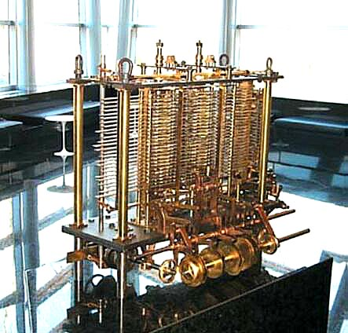

A Revolução dos Computadores
De Tubos a Transistores
texto.
A história da computação começou no século XIX, quando Charles Babbage criou o conceito de Máquina Analítica , um dispositivo mecânico que é considerado o primeiro modelo teórico de um computador.
Essa máquina fohi projetada para realizar cálculos complexos de forma automatizada e incluir componentes como memória e uma unidade de processamento.
texto.
Texto.